Contents
- Author: Tony Zheng
- Mapping a forward distance (with no lateral movement) to a number of y_newPixels
- Flipped axis to get the equation in reverse
- Plotting the objects at varying y_Inertial for different x_Inertial
- Changing the previous plot to have the given y_Inertial rather than x_newPixel for the x axis
- Offset each set of measurements at different x_Inertials so that the y_newPixel starts at 0 rather than the given y_newPixel (subtract each row by the first value)
- Find a polynomial fit for all those data points
- Plot the varying lateral distance y_Inertial vs. x_newPixel
- Calculate the slope of the line for each x_Inertial
- Taking a polyfit of each slope vs x_inertial
- Taking a polyfit of each offset vs x_inertial
- Example of an arbitrary x_inertial to see if it lines up with my expectations
- Plotting the given x_inertials with my slope equation
- Plot slope vs x_inertial
- Plot offset B vs x_inertial
- Plotting the original points (Given x_inertial and y_inertial, when I run them through my equations, do they match the measured pixel positions?)
- Skew Correction
Author: Tony Zheng
clear
clc
close all
Mapping a forward distance (with no lateral movement) to a number of y_newPixels
%xI = 1.5,2ft,2.5ft,3ft,3.5ft,4ft,4.5ft,5ft, yI=0 f = @(xy) [xy(:,1)-320,480-xy(:,2)]; xpyp=[322,424; 320,358; 319,324; 318,303; 318,288; 316,278; 316,270; 316,263]; xpyp=f(xpyp); xi = [1.5;2;2.5;3;3.5;4;4.5;5]; xI_to_ynp_eq = polyfit([1.2;xi],[0;xpyp(:,2)],4); xI_to_ynp_vals = polyval(xI_to_ynp_eq,0:.1:5); plot(xi,xpyp(:,2),[0:.1:5],xI_to_ynp_vals,'--') xlabel('x_{Inertial} = 1 to 5 ft, y_{Inertial} = 0 ft') ylabel('y_{newPixel}') title('x_{Inertial} vs y_{newPixel} with a fixed 0 lateral distance')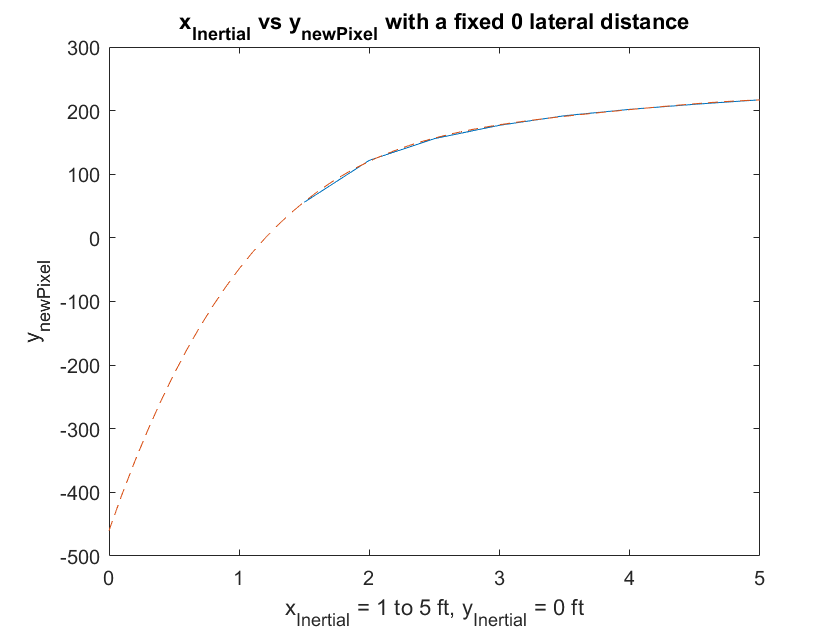
Flipped axis to get the equation in reverse
figure ynp_to_xI_eq = polyfit([0;xpyp(:,2)],[1.2;xi],4); ynp_to_xI_vals = polyval(ynp_to_xI_eq,[0:220]); plot(xpyp(:,2),xi,[0:220],ynp_to_xI_vals,'--') ylabel('x_{Inertial} = 1 to 5 ft, y_{Inertial} = 0 ft') xlabel('y_{newPixel}') legend('4th order polynomial','Location','Best') title('FLIPPED:y_{newPixel} vs x_{Inertial} with a fixed 0 lateral distance')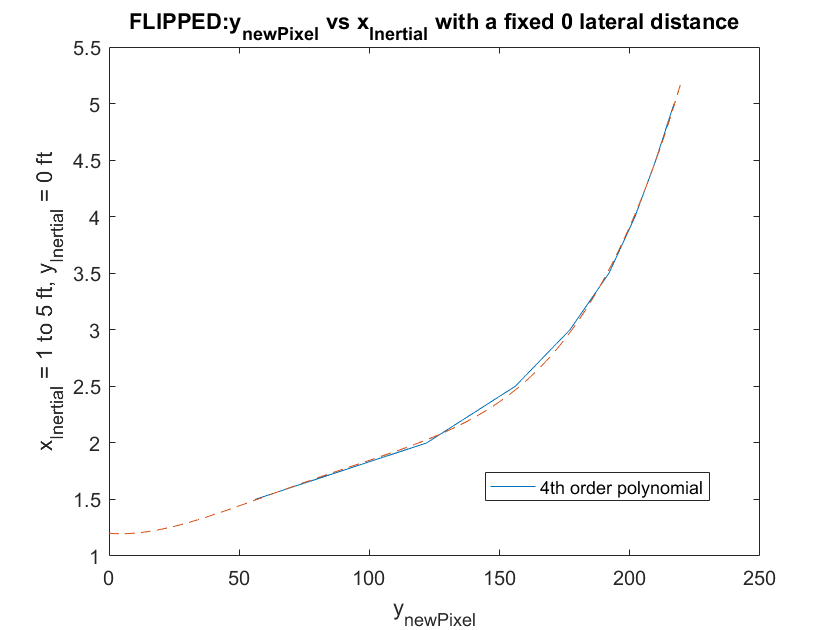
Plotting the objects at varying y_Inertial for different x_Inertial
xi = 2, yi by 0.25ft
x2 = [320,358;
386,355
452,355;
522,354;
597,355;];
x2 = f(x2);
x2yI = [0;0.25;0.5;0.75;1];
%yi = .5,.75,1,1.5
x3 = [318,303;
399,301;
440,300;
481,299;
569,297;]
x3yI = [0;0.5;0.75;1;1.5];
x3=f(x3);
%.5s
x4 = [316,278;
374,273;
432,272;
491,271;
555,271;]
x4yI = [0;0.5;1;1.5;2];
x4=f(x4);
x5 = [316,263;
360,259;
406,259;
452,259;
495,257];
x5yI = [0;0.5;1;1.5;2];
x5=f(x5);
figure
plot(x2(:,1),x2(:,2),x3(:,1),x3(:,2),x4(:,1),x4(:,2),x5(:,1),x5(:,2))
xlabel('x_{newPixel}')
ylabel('y_{newPixel}')
title('Pixels only: x_{newPixel} vs y_{newPixel}')
x3 = 318 303 399 301 440 300 481 299 569 297 x4 = 316 278 374 273 432 272 491 271 555 271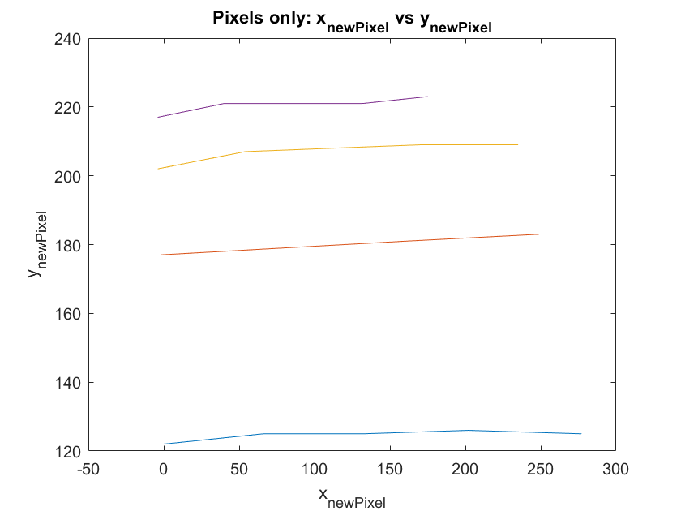
Changing the previous plot to have the given y_Inertial rather than x_newPixel for the x axis
figure plot(x2yI,x2(:,2),x3yI,x3(:,2),x4yI,x4(:,2),x5yI,x5(:,2)) xlabel('-y_{Inertial}') ylabel('y_{newPixel}') title('Lateral motion: y_{Inertial} vs y_{newPixel}')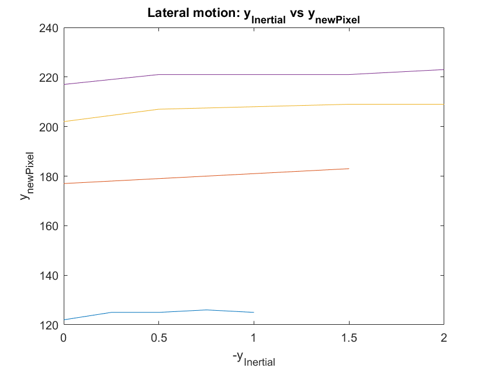
Offset each set of measurements at different x_Inertials so that the y_newPixel starts at 0 rather than the given y_newPixel (subtract each row by the first value)
yntrunc = @(xy) [xy(:,2)-xy(1,2)]; y2 = yntrunc(x2); y3 = yntrunc(x3); y4 = yntrunc(x4); y5 = yntrunc(x5); figure plot(x2yI,y2,'r',x3yI,y3,'g',x4yI,y4,'b',x5yI,y5,'c') xlabel('-y_{Inertial}') ylabel('y_{newPixel}') %legend('x_I = 2ft','x_I = 3ft','x_I = 4ft','x_I = 5ft') title('Lateral motion (pixel start at 0): y_{Inertial} vs y_{newPixel}')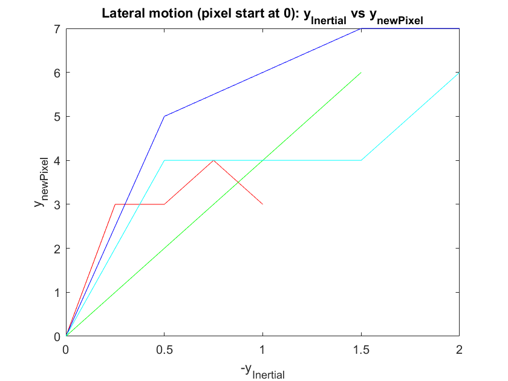
Find a polynomial fit for all those data points
m_yiyp=@(yi,yp) polyfit(yi,yp,3); m_yiyp2 = m_yiyp(x2yI,y2) m_yiyp3 = m_yiyp(x3yI,y3) m_yiyp4 = m_yiyp(x4yI,y4) m_yiyp5 = m_yiyp(x5yI,y5) x2m_yiyp = polyval(m_yiyp2,[0:0.1:x2yI(end)]); x3m_yiyp = polyval(m_yiyp3,[0:0.1:x3yI(end)]); x4m_yiyp = polyval(m_yiyp4,[0:0.1:x4yI(end)]); x5m_yiyp = polyval(m_yiyp5,[0:0.1:x5yI(end)]); mall = m_yiyp([[0:0.1:x2yI(end)]';[0:0.1:x3yI(end)]';[0:0.1:x4yI(end)]';[0:0.1:x5yI(end)]'],[x2m_yiyp';x3m_yiyp';x4m_yiyp';x5m_yiyp']); xyall = polyval(mall,[[0:0.1:x2yI(end)]';[0:0.1:x3yI(end)]';[0:0.1:x4yI(end)]';[0:0.1:x5yI(end)]']); xxxyall = [[0:0.1:x2yI(end)]';[0:0.1:x3yI(end)]';[0:0.1:x4yI(end)]';[0:0.1:x5yI(end)]']; hold on plot(xxxyall,xyall,'black*',[0:0.1:x2yI(end)],x2m_yiyp,'r--',[0:0.1:x3yI(end)],x3m_yiyp,'g--',[0:0.1:x4yI(end)],x4m_yiyp,'b--',[0:0.1:x5yI(end)],x5m_yiyp,'c--') legend('x_I = 2ft','x_I = 3ft','x_I = 4ft','x_I = 5ft','3rd order poly','Location','best')
m_yiyp2 =
5.3333 -16.0000 13.6667 0.1000
m_yiyp3 =
0.0000 -0.0000 4.0000 0.0000
m_yiyp4 =
2.0000 -8.8571 13.2143 0.0714
m_yiyp5 =
4.0000 -13.1429 13.2857 0.0286
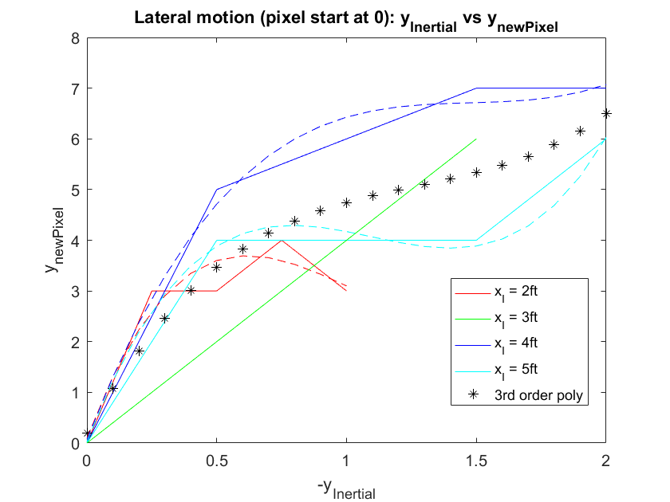 Plot the varying lateral distance y_Inertial vs. x_newPixel
figure plot(x2yI,x2(:,1),x3yI,x3(:,1),x4yI,x4(:,1),x5yI,x5(:,1)) xlabel('-y_{Inertial}') ylabel('x_{newPixel}')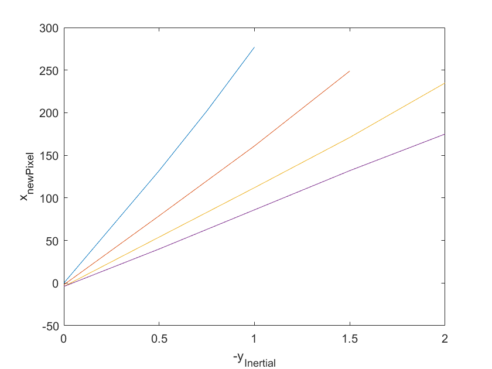
Calculate the slope of the line for each x_Inertial
m=@(yi,xn) polyfit(yi,xn,1); m2 = m(x2yI,x2(:,1)) m3 = m(x3yI,x3(:,1)) m4 = m(x4yI,x4(:,1)) m5 = m(x5yI,x5(:,1)) x2m = polyval(m2,x2yI); x3m = polyval(m3,x3yI); x4m = polyval(m4,x4yI); x5m = polyval(m5,x5yI);
m2 = 276.0000 -2.6000 m3 = 167.0000 -3.8500 m4 = 119.0000 -5.4000 m5 = 90.0000 -4.2000
Taking a polyfit of each slope vs x_inertial
mlist = [2,m2(1);
3,m3(1);
4,m4(1);
5,m5(1)];
mpoly = polyfit(mlist(:,1),mlist(:,2),3);
mvals = polyval(mpoly,mlist(:,1));
Taking a polyfit of each offset vs x_inertial
blist = [2,m2(2);
3,m3(2);
4,m4(2);
5,m5(2)];
bpoly = polyfit(blist(:,1),blist(:,2),3);
bvals = polyval(bpoly,blist(:,1));
%plot(mlist(:,1),mlist(:,2),mlist(:,1),mvals)
% 3rd order fit between the xI and m
Example of an arbitrary x_inertial to see if it lines up with my expectations
yis = 0:.2:2;
xnpis = polyval(mpoly,2.5)*yis+polyval(bpoly,2.5);
hold on
plot(yis,xnpis)
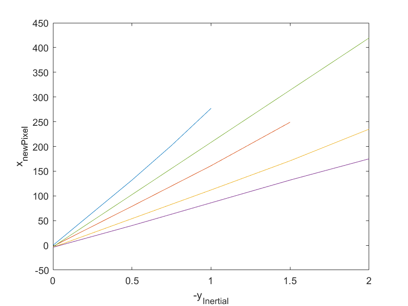 Plotting the given x_inertials with my slope equation
hold on plot(x2yI,x2m,'--',x3yI,x3m,'--',x4yI,x4m,'--',x5yI,x5m,'--') title('Lateral motion: y_{Inertial} vs x_{newPixel} at varying forward distance') legend('x_I = 2ft','x_I = 3ft','x_I = 4ft','x_I = 5ft','Test: x_I = 2.5ft','Location','best')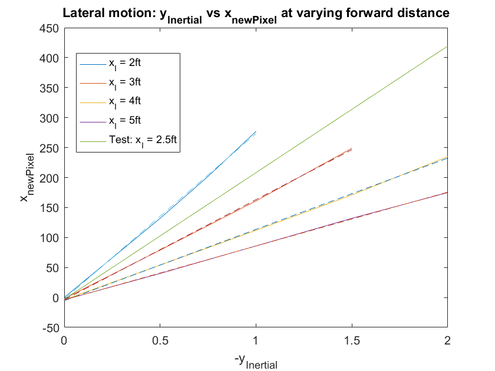
Plot slope vs x_inertial
figure plot(mlist(:,1),mlist(:,2)) title('Slope vs. x_{Inertial}') xlabel('x_{Inertial}') ylabel('Slope (x_{newPixel}/y_{Inertial})')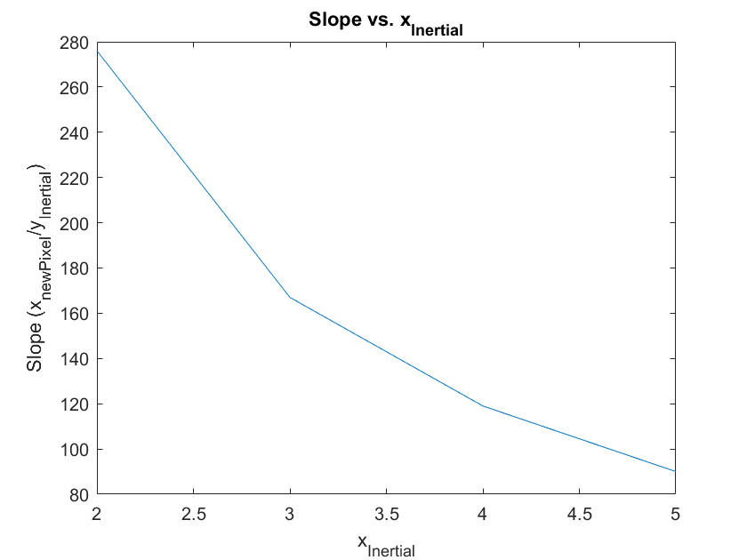
Plot offset B vs x_inertial
figure plot(blist(:,1),blist(:,2)) title('Offset b vs. x_{Inertial}') xlabel('x_{Inertial}') ylabel('b (x_{newPixel}/y_{Inertial})')
Plotting the original points (Given x_inertial and y_inertial, when I run them through my equations, do they match the measured pixel positions?)
figure calc_ynp_to_xI = @(ynp) polyval(ynp_to_xI_eq,ynp); calc_xnp_to_yI = @(xI,xnp) (xnp-polyval(bpoly,xI))./polyval(mpoly,xI); x2I = calc_ynp_to_xI(x2(:,2)) y2I = calc_xnp_to_yI(x2I,x2(:,1)) x2xI = 2*ones(length(x2yI),1); x3I = calc_ynp_to_xI(x3(:,2)) y3I = calc_xnp_to_yI(x3I,x3(:,1)) x3xI = 3*ones(length(x3yI),1); x4I = calc_ynp_to_xI(x4(:,2)) y4I = calc_xnp_to_yI(x4I,x4(:,1)) x4xI = 4*ones(length(x4yI),1); x5I = calc_ynp_to_xI(x5(:,2)) y5I = calc_xnp_to_yI(x5I,x5(:,1)) x5xI = 5*ones(length(x5yI),1); plot(x2yI,x2xI,'o',y2I,x2I,'x') hold on plot(x3yI,x3xI,'o',y3I,x3I,'x') plot(x4yI,x4xI,'o',y4I,x4I,'x') plot(x5yI,x5xI,'o',y5I,x5I,'x') ylim([0 6]) ylabel('x_{Inertial}') xlabel('-y_{Inertial}') title('Skewed')
x2I =
2.0279
2.0561
2.0561
2.0657
2.0561
y2I =
0.0096
0.2564
0.5031
0.7688
1.0451
x3I =
2.9761
3.0394
3.0722
3.1058
3.1754
y3I =
0.0107
0.5049
0.7654
1.0331
1.6297
x4I =
4.0218
4.3096
4.3709
4.4335
4.4335
y4I =
0.0120
0.5408
1.0847
1.6554
2.2560
x5I =
4.9829
5.2924
5.2924
5.2924
5.4564
y5I =
0.0029
0.5426
1.1245
1.7065
2.4691
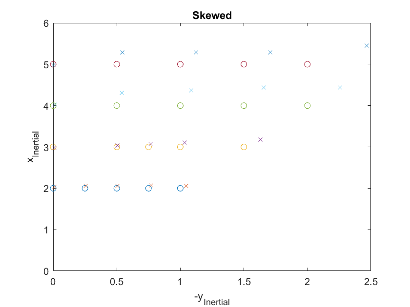 Skew Correction
calc_yI_yp_skew = @(yI) polyval(mall,yI); yp2skew = calc_yI_yp_skew(y2I) x2Iskew = calc_ynp_to_xI(x2(:,2)-yp2skew) y2Iskew = calc_xnp_to_yI(x2Iskew,x2(:,1)) yp3skew = calc_yI_yp_skew(y3I) x3Iskew = calc_ynp_to_xI(x3(:,2)-yp3skew) y3Iskew = calc_xnp_to_yI(x3Iskew,x3(:,1)) yp4skew = calc_yI_yp_skew(y4I) x4Iskew = calc_ynp_to_xI(x4(:,2)-yp4skew) y4Iskew = calc_xnp_to_yI(x4Iskew,x4(:,1)) yp5skew = calc_yI_yp_skew(y5I) x5Iskew = calc_ynp_to_xI(x5(:,2)-yp5skew) y5Iskew = calc_xnp_to_yI(x5Iskew,x5(:,1)) figure plot(x2yI,x2xI,'o',y2Iskew,x2Iskew,'x') hold on plot(x3yI,x3xI,'o',y3Iskew,x3Iskew,'x') plot(x4yI,x4xI,'o',y4Iskew,x4Iskew,'x') plot(x5yI,x5xI,'o',y5Iskew,x5Iskew,'x') ylim([0 6]) ylabel('x_{Inertial}') xlabel('-y_{Inertial}') title('Corrected')
yp2skew =
0.2863
2.1968
3.4719
4.3131
4.8041
x2Iskew =
2.0253
2.0353
2.0236
2.0250
2.0115
y2Iskew =
0.0096
0.2535
0.4941
0.7517
1.0196
yp3skew =
0.2966
3.4794
4.3049
4.7880
5.5247
x3Iskew =
2.9670
2.9312
2.9364
2.9520
2.9909
y3Iskew =
0.0106
0.4808
0.7207
0.9663
1.5081
yp4skew =
0.3082
3.6208
4.8550
5.5702
7.7458
x4Iskew =
4.0050
4.0982
4.0850
4.1010
3.9814
y4Iskew =
0.0118
0.5126
1.0091
1.5224
2.0101
yp5skew =
0.2241
3.6274
4.9030
5.6686
9.2793
x5Iskew =
4.9663
5.0107
4.9164
4.8609
4.7469
y5Iskew =
0.0035
0.4927
0.9758
1.4466
1.8387
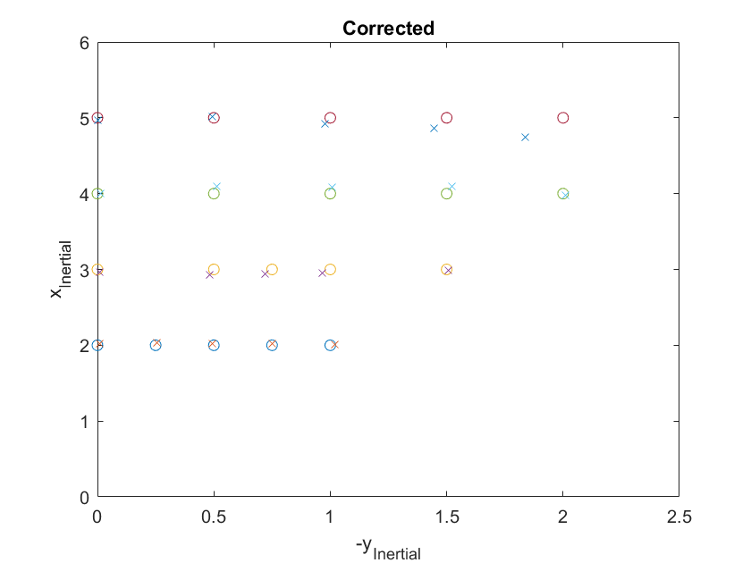